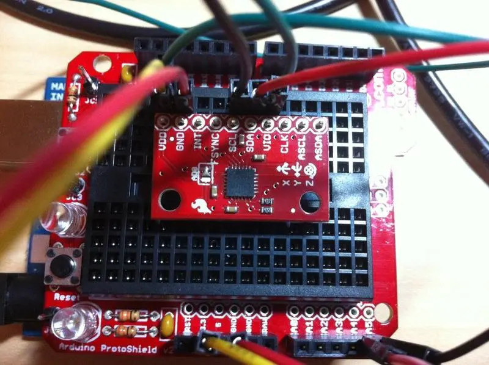

// FORMACIÓN Y DESARROLLO
MPU 6050 Sparkfun Breakout
El MPU-6050 combina un giroscopio MEMS de 3 ejes y un acelerómetro de 3 ejes en la misma pastilla de silicio junto con un procesador digital de movimiento (DMP Digital Motion Processor) capaz de procesar los más complejos algoritmos de movimientos en 9 ejes.
6 de diciembre de 2013 · 3 minutos de lectura

El MPU-6050 elimina los errores de cruce por cero, los cuales provocan problemas de alineación vertical. La placa desarrollada por Sparkfun para el MPU-6050, ofrece la posibilidad de trabajar fácilmente con este pequeño integrado QFN. Con solo conectarle una pira de pines de 0,1", incluyendo un bus I2C auxiliar que permite al MPU-6050 conectarse a un magnetómetro u otros sensores externos.
Características
- Salida digital I2C.
- Tensión de alimentación: 2,3 - 3,4v.
- Permite puentear CLK, FSYNC y AD0.
- Giróscopo 3 ejes (velocidad angular), sencibilidad 131LSB/dps con fondo de escala configurable ±250, -±500, ±1.000 o ±2000dps.
- Acelerómetro 3 ejes con fondo de escala programable ±2 g, ±4 g, ±8g o ±16g.
- Procesador digital de movimiento (DMP Digital Motion Processor).
- Contiene algoritmos integrados para calibración en tiempo de ejecución, sin intervención del usuario.
- Sensor digital de temperatura.
Implementación
Lo implementamos en CMSIS con un LPC1769, en el nivelador digital, para leer las mediciones de aceleración y velocidad angular. Las lecturas de las mediciones de cada dato, acelerómetro (x, y, z), giróscopo (x, y, z) y temperatura se realizan por medio de dos bytes de 8 bits. Una parte alta y una baja. Por lo que luego de hacer la lectura de cada valor, es necesario "armar" el número.
Por lo tanto primero se realiza la lectura propia de cada segmento de 8 bits y se almacena en un buffer de 16 posiciones "Datos_Recibidos [i]:
//<! Datos_Recibidos[0] = 8bits más significativos acc eje x
//<! Datos_Recibidos[1] = 8bits menos significativos acc eje x
//<!...
//<! Datos_Recibidos[12] = 8bits mas significativos gyr eje z
//<! Datos_Recibidos[13] = 8bits menos significativos gyr eje z
El armado del dato se realiza sobre un vector de 7 posiciones, "Información[i]", donde las posiciones 0, 1 y 2 son los valores del acelerómetro x, y, z, respectivamente, uniendo los 8bits altos con los 8 bits bajos de cada dato. Caso similar tanto para el giróscopo en las ubicaciones 4, 5 y 6, como la temperatura en la posición 3.
Datos_Devueltos [ACC_X] = -((Datos_Recibidos[2]<< 8 & 0xFF00) +
(Datos_Recibidos[3] & 0x00FF));
Cabe aclarar que al mismo tiempo que se realiza la unión de los datos, se hace la corrección física necesaria para alinear el sensor con el equipo donde se encuentra montado.
Una vez obtenido el vector "Información[i]", los datos están listos para procesar. Además, se pueden realizar otras configuraciones en los fondos de escala, filtros, ect.
Actualización: Prometo armar un repositorio con el proyecto.
Estudios relacionados

RPIC 2013 Plataforma Inteligente
Tuvimos al agrado de poder presentar el trabajo con el que venimos trabajando en estos últimos años, junto al equipo de GIAR
Octubre 2013
Medidor de nivel digital
Indicador de nivel digital. Por medio de un display con un gráfico tipo burbuja indica el ángulo de inclinación y su dirección.
Diciembre 2012
Avance 2,45%
El que aprende y aprende y no practica lo que sabe, es como el que ara y ara y no siembra.
Agosto 2012// EL SIGUIENTE PASO
TU PRODUCTO.
SU PRÓXIMA ETAPA.
Una primera conversación para entender el desafío y ver si puedo aportar valor.
↗ Hablemos de tu proyecto